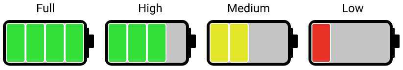

We use enums to define sets of unchangeable variables. After we defined them, we may need to extend the functionality of the enum and add values to the constants. Just like a class, an enum can have fields, constructors and methods. That's why an enum comes in handy when working with values you're not going to change.
To prove that, let's consider the following example.
Suppose we have to write a program that displays the battery level of a smartphone, power bank, or any device with a discrete scale.
First of all, let's create an enum with several threshold levels that represent the battery's level of charge:
public enum ChargeLevel {
FULL, HIGH, MEDIUM, LOW
}Suppose that we need to display the level of battery charge visually. We want it to be divided into several segments and have a color indication as well, in this way:
To do this, we will add corresponding fields and values to our enum. When we define them, we must supply values to
the constructor of the enum. Here, we created a constructor in the ChargeLevel enum and added two
fields sections and color. Also, there are two methods getSections() and
getColor() that return the values of fields respectively.
public enum ChargeLevel {
FULL(4, "green"),
HIGH(3, "green"),
MEDIUM(2, "yellow"),
LOW(1, "red");
int sections;
String color;
ChargeLevel(int sections, String color) {
this.sections = sections;
this.color = color;
}
public int getSections() {
return sections;
}
public String getColor() {
return color;
}
}Note that all enum instances are created by the JVM in the same way as a static field of a class. This is the reason
why an enum cannot contain a public constructor. This means we cannot create enum objects by
invoking an enum constructor with the new keyword but have to choose one of the predefined instances
instead.
Keep in mind that if your enum contains fields and methods, you should always define them after the list of
constants in the enum.
Now we have a class with additional info gathered in one place: the number of sections to highlight and the color.
System.out.println(ChargeLevel.LOW.sections); // 1
System.out.println(ChargeLevel.LOW.color); // red
It is possible to extend an enum by adding custom static methods. For example, let's add a method that finds a ChargeLevel
instance by the given number of sections:
public enum ChargeLevel {
FULL(4, "green"),
HIGH(3, "green"),
MEDIUM(2, "yellow"),
LOW(1, "red");
int sections;
String color;
ChargeLevel(int sections, String color) {
this.sections = sections;
this.color = color;
}
public int getSections() {
return sections;
}
public String getColor() {
return color;
}
public static ChargeLevel findByNumberOfSections(int sections) {
for (ChargeLevel value: values()) {
if (value.sections == sections) {
return value;
}
}
return null;
}
}Inside the findByNumberOfSections() method, we iterated over the possible values using a
for-each loop. Here's an example of our method's output:
System.out.println(ChargeLevel.findByNumberOfSections(2)); // MEDIUMSince an enum is a special class type in Java, we can add constructors, fields, and methods to it. Thus, it is possible to enhance our enum to include the values we need. The values of the constants are defined when we declare the enum. If you want to add enum fields, methods and constructors, you should do it after the enum constants' declaration.